Contents
- Octave Band Filtering: Lab P -14: Group 8
- 4.1 Simple Bandpass Filter
- 4.1a) Generate Bandpass with wc = 0.4*pi and L = 40, plot magnitude and phase response
- Frequency response for the bandpass filter
- Plot magnitude of the frequency response
- Plot phase for frequency response
- 4.1b) Using the 0.5 level passband, find width of passband
- Use Project function to define the pass band width
- Display passband width
- 4.1c) Make plots to measure the passband at L = 20 and L = 80 with wc the same; measure their passband widths
- BPF for L = 20 using project function
- Plot magnitude of the frequency response for L = 20 BPF
- Use Project function to define the pass band width
- Display passband width for L = 20 BPF
- BPF for L = 80 using project function
- Plot magnitude of the frequency response for L = 80 BPF
- Use Project function to define the pass band width
- Display passband width for L = 80 BPF
- Explain
- 4.2) A Better BPF
- 4.2a) Same as 4.1a) for new filter where wc = 0.25*pi and L = 41. Also, measure response at w = {0, 0.1*pi, 0.25*pi, 0.4*pi, 0.5*pi, 0.75*pi}
- Plot magnitude of the frequency response
- Plot phase for frequency response
- Use find function to calculate frequency response at the desired frequencies
- 4.2b) Find the passband width at a threshold level of 50%. Then plot the graphs for two more BPFs at L = 21 and L = 81 and get their passbands.
- We now define the BPF for L = 21
- Plot magnitude of the frequency response for L = 21
- Use PBWidth with the updated threshold
- Display passband width for L = 21
- And now for the analysis of the L = 81 BPF
- Plot magnitude of the frequency response for L = 81
- Use PBWidth with the updated threshold
- Display passband width for L = 81
- Explain
- 4.2c) Given a specific input, determine the output signal by hand
- 4.2d) Use frequency response to explain why the filter only passes at cutoff
- 5.1
- diplay the table for HTML
- 5.2a) See function "HanningNorm(wc, L, N);"
- 5.2b)
- 5.2c)
- 5.3a)
- 5.3b)
- 5.3c)
- 5.3d) Validate Output Signals by Comparing Magnitudes and Phases
- 5.3e)
- Project Functions
- Simple Band Pass Filter (4.1a)
- Width of pass band (4.1b)
- Better Bandpass filter
- Normalized Hanning Bandpass Filter (5.2)
Octave Band Filtering: Lab P -14: Group 8
clear;
close all;
4.1 Simple Bandpass Filter
Use the impulse response of FIR: h(n) = (2/L)*cos(wc*n), 0 <= n < L
4.1a) Generate Bandpass with wc = 0.4*pi and L = 40, plot magnitude and phase response
% Begin Filter analysis L = 40; % Length of Filter N = 2048; % # of Points for the DFT w = -pi: 2*pi/N: pi - 2*pi/N; % Define frequency range wc = 0.4*pi; % Cutoff frequency for the filter
Frequency response for the bandpass filter
H = BPFsimp(wc, L, N); % Obtain frequency response of Bandpass filter idx = N/2 + 1; % Define start index for positive frequencies
Plot magnitude of the frequency response
figure(1); plot(w(idx:end), abs(H(idx:end))); title('Magnitude of Frequency Response '); xlabel('\omega (rad)'); ylabel('|H(\omega)|'); % Add a vertical line at ω = 0.4π ~ 1.257 xline(1.257, '--r', '\omega = 0.4\pi', 'LabelOrientation', 'horizontal', 'LabelVerticalAlignment', 'middle'); yline(1, '--') snapnow; % This Plot shows the positive index of our bandpass filter with the main % lobe centered at wc. It's side lobes are reasonably large, meaning that % the threshold level we choose for our passband cannot be too close to 0.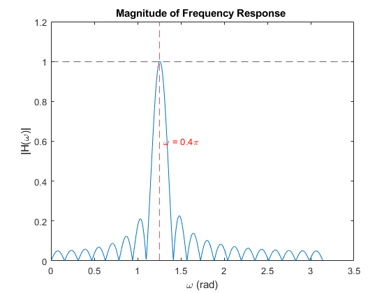
Plot phase for frequency response
figure(2); plot(w(idx:end), angle(H(idx:end))); title('Phase of Frequency Response'); xlabel('\omega (rad)'); ylabel('\Theta(\omega)'); snapnow; % This is the Phase of our passband which is linear in the region of each % lobe, though the line centered at the cutoff frequency is larger & % actually representative of our phase. This is expected for an FIR filter.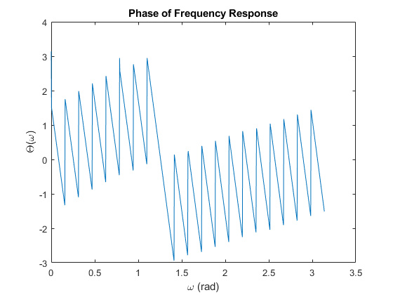
4.1b) Using the 0.5 level passband, find width of passband
Use Project function to define the pass band width
Passband = PBWidth(H(idx:end),w(idx:end),0.5);
Display passband width
fprintf('Passband width @ the 0.5 level is approximately %.4f radians for the L = 40 filter\n', Passband); % We can imagine this width drawn on our first plot, in 4.1a), between the sides of % the main lobe that is centered at wc. It can give us a range of % frequencies accepted by our passband using the cutoff frequency where % Range of accepted w = wc +- PassBand_Width/2
Passband width @ the 0.5 level is approximately 0.1871 radians for the L = 40 filter
4.1c) Make plots to measure the passband at L = 20 and L = 80 with wc the same; measure their passband widths
BPF for L = 20 using project function
H20 = BPFsimp(wc, 20, N);
Plot magnitude of the frequency response for L = 20 BPF
figure(3); plot(w(idx:end), abs(H20(idx:end))); title('Magnitude of Frequency Response '); xlabel('\omega (rad)'); ylabel('|H(\omega)|'); % Add a vertical line at ω = 0.4π ~ 1.257 xline(1.257, '--r', '\omega = 0.4\pi', 'LabelOrientation', 'horizontal', 'LabelVerticalAlignment', 'middle'); yline(1, '--') snapnow;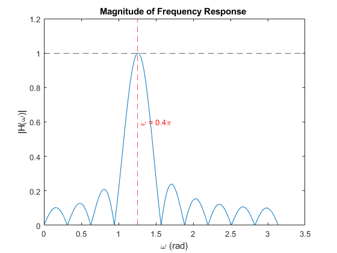
Use Project function to define the pass band width
Passband = PBWidth(H20(idx:end),w(idx:end),0.5);
Display passband width for L = 20 BPF
fprintf('Passband width @ the 0.5 level is approximately %.4f radians for the L = 20 filter\n', Passband);
Passband width @ the 0.5 level is approximately 0.3774 radians for the L = 20 filter
BPF for L = 80 using project function
H80 = BPFsimp(wc, 80, N);
Plot magnitude of the frequency response for L = 80 BPF
figure(4); plot(w(idx:end), abs(H80(idx:end))); title('Magnitude of Frequency Response '); xlabel('\omega (rad)'); ylabel('|H(\omega)|'); % Add a vertical line at ω = 0.4π ~ 1.257 xline(1.257, '--r', '\omega = 0.4\pi', 'LabelOrientation', 'horizontal', 'LabelVerticalAlignment', 'middle'); yline(1, '--') snapnow;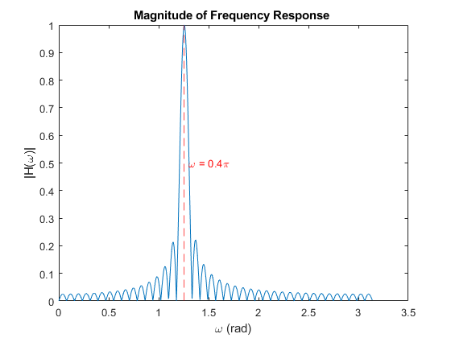
Use Project function to define the pass band width
Passband = PBWidth(H80(idx:end),w(idx:end),0.5);
Display passband width for L = 80 BPF
fprintf('Passband width @ the 0.5 level is approximately %.4f radians for the L = 80 filter\n', Passband);
Passband width @ the 0.5 level is approximately 0.0920 radians for the L = 80 filter
Explain
It is obvious from the figures that as L increases, the width of the pass band narrows. At half the original length, the passband is twice as wide; at twice the original length, the passband is half as wide.
4.2) A Better BPF
Use a Hamming window to adjust the BPF where now: h(n) = (0.54-0.46*cos(2*pi*n/(L-1)))cos(wc(n-(L-1)/2)), n = 1,2,3,...,L-1
4.2a) Same as 4.1a) for new filter where wc = 0.25*pi and L = 41. Also, measure response at w = {0, 0.1*pi, 0.25*pi, 0.4*pi, 0.5*pi, 0.75*pi}
clear % Begin Filter analysis L = 41; % Length of Filter N = 2048; % # of Points for the DFT w = -pi: 2*pi/N: pi - 2*pi/N; % Define frequency range wc = 0.25*pi; % Cutoff frequency for the filter % Use Project function to define better bandpass filter H = BPFbetter(wc, L, N); idx = N/2 + 1; % Define start index for positive frequencies
Plot magnitude of the frequency response
figure(5); plot(w(idx:end), abs(H(idx:end))); title('Magnitude of Frequency Response '); xlabel('\omega (rad)'); ylabel('|H(\omega)|'); % Add a vertical line at ω = 0.25π ~ 0.7854 xline(0.7854, '--r', '\omega = 0.25\pi', 'LabelOrientation', 'horizontal', 'LabelVerticalAlignment', 'middle'); snapnow; % This Plot shows the positive index of our bandpass better filter with the main % lobe centered at wc = 0.25*pi. We see very low side lobes coming off of our main % lobe. This suggests our passband threshold can be much closer to 0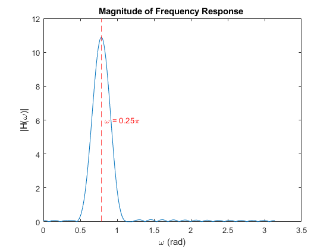
Plot phase for frequency response
figure(6); plot(w(idx:end), angle(H(idx:end))); title('Phase of Frequency Response'); xlabel('\omega (rad)'); ylabel('\Theta(\omega)'); snapnow; % This is the Phase of our passband which is linear in the region of each % of the main lobe, but is not consistently linear in the regions of the % side lobes. For our FIR filter this is as expected for a non normalized signal.

Use find function to calculate frequency response at the desired frequencies
% Define intermediate function for response at positive frequencies for % indexing purposes G = H(idx:end); % Define values of omega selected_w = [0, 0.1*pi, 0.25*pi, 0.4*pi, 0.5*pi, 0.75*pi]; % Initialize an array to store the magnitudes at selected frequencies H_for_selected_w = zeros(1, length(selected_w)); % Initialize phase for part 4.2c) Phase_for_selected_w = zeros(1, length(selected_w)); % Initalize an array of values for the target indicies to find H target_idx = zeros(1, length(selected_w)); % Calculate H by finding the correct index in the range of frequencies for i = 1:length(selected_w) % Find all the indices in w(idx:end) closest to the desired frequency target_idx = find(abs(w(idx:end) - selected_w(i)) <= 0.0013); % Getting the magnitude and phase values for the target indices H_for_selected_w(i) = abs(G(target_idx)); Phase_for_selected_w(i) = angle(G(target_idx)); end % Display the magnitudes for the selected frequencies fprintf('|H(\x03c9)| for selected values of \x03c9:\n'); for i = 1:length(selected_w) fprintf(' %.2f\x03c0: %.4f\n', selected_w(i)/pi, H_for_selected_w(i)); end % Display values of phase for part 4.2c) fprintf('\x0398(\x03c9) for selected values of \x03c9:\n'); for i = 1:length(selected_w) fprintf(' %.2f\x03c0: %.4f\n', selected_w(i)/pi, Phase_for_selected_w(i)); end % This list of Responses makes sense, you can just look at the graph. Most % of the values of w are close to zero, but the value at wc = 0.25*pi is % much higher (at 10.88) since that is the center of the passband and all the other % selected frequencies fall outside the passband.
|H(ω)| for selected values of ω: 0.00π: 0.0800 0.10π: 0.0797 0.25π: 10.8800 0.40π: 0.0817 0.50π: 0.0800 0.75π: 0.0800 Θ(ω) for selected values of ω: 0.00π: 3.1416 0.10π: -3.1170 0.25π: 3.1416 0.40π: 3.1170 0.50π: -3.1416 0.75π: 3.1416
4.2b) Find the passband width at a threshold level of 50%. Then plot the graphs for two more BPFs at L = 21 and L = 81 and get their passbands.
% 50% of the maximum 10.88 is 5.44, so this defines our threshold. % This threshold can be calculated by th = max(abs(G)) * 0.5; % We can use the same function defined in part 4.1(b) Passband = PBWidth(G,w(idx:end),th); % Display passband width for L = 41 fprintf('Passband width @ the 50%% level is approximately %.4f radians for the L = 41 filter\n', Passband);
We now define the BPF for L = 21
H21 = BPFbetter(wc, 21, N);
idx = N/2 + 1; % Define start index for positive frequencies
Plot magnitude of the frequency response for L = 21
figure(7) plot(w(idx:end), abs(H21(idx:end))); title('Magnitude of Frequency Response '); xlabel('\omega (rad)'); ylabel('|H(\omega)|'); % Add a vertical line at ω = 0.25π ~ 0.7854 xline(0.7854, '--r', '\omega = 0.25\pi', 'LabelOrientation', 'horizontal', 'LabelVerticalAlignment', 'middle'); snapnow; % Set a threshold based on the peak value for H21 th21 = max(abs(H21(idx:end))) * 0.5;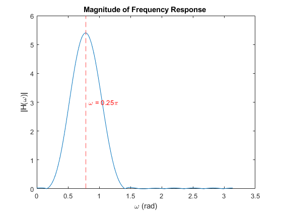
Use PBWidth with the updated threshold
Passband21 = PBWidth(H21(idx:end), w(idx:end), th21);
Display passband width for L = 21
fprintf('Passband width @ the 50%% level is approximately %.4f radians for the L = 21 filter\n', Passband21);
Passband width @ the 50% level is approximately 0.5676 radians for the L = 21 filter
And now for the analysis of the L = 81 BPF
H81 = BPFbetter(wc, 81, N);
idx = N/2 + 1; % Define start index for positive frequencies
Plot magnitude of the frequency response for L = 81
figure(8) plot(w(idx:end), abs(H81(idx:end))); title('Magnitude of Frequency Response '); xlabel('\omega (rad)'); ylabel('|H(\omega)|'); % Add a vertical line at ω = 0.25π ~ 0.7854 xline(0.7854, '--r', '\omega = 0.25\pi', 'LabelOrientation', 'horizontal', 'LabelVerticalAlignment', 'middle'); snapnow; % Set a threshold based on the peak value for H81 th81 = max(abs(H81(idx:end))) * 0.5;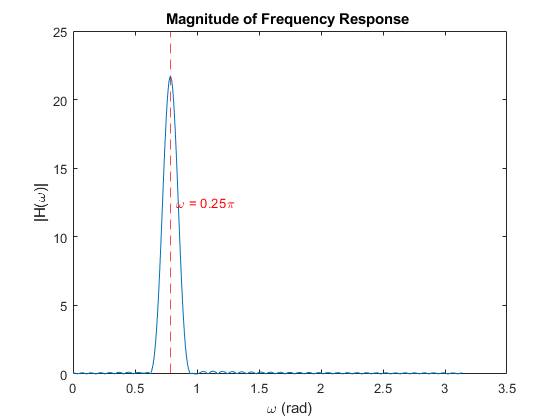
Use PBWidth with the updated threshold
Passband81 = PBWidth(H81(idx:end), w(idx:end), th81);
Display passband width for L = 81
fprintf('Passband width @ the 50%% level is approximately %.4f radians for the L = 81 filter\n', Passband81);
Passband width @ the 50% level is approximately 0.1411 radians for the L = 81 filter
Explain
The relationship is similar to that found in part 7.1 (c) in terms of the passband width. However, this filter is not normalized, so the magnitude of the frequency response changes depending on the value of L that you chose. Lower values of L will mean that the passband has less gain, and a higher value of L will correlate to more gain.
4.2c) Given a specific input, determine the output signal by hand
% Display image of hand written derivation of output as requested by the problem. filename = "Problem_4_2c.png"; imshow(filename) snapnow;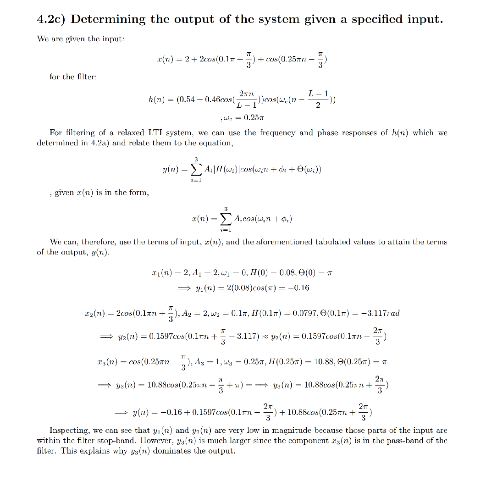
4.2d) Use frequency response to explain why the filter only passes at cutoff
% Observing the frequency response of the 41-length filter from 4.2a) we % can see that the response is only significant at the 0.25*pi frequency. % The response dies down to very shallow side lobes outside of this % passband. If you observe the output equation from 4.2c) it is easy to see % that the magnitude of the response for an input centered anywhere in the % frequency range of the filter will be either amplified of attentuated by % the filter. If an input component falls within the passband, it will % be dominant in the output. However, if it falls within the stop-band, it % will be greatly attenuated and not be greatly represented in the output.
5.1
BP_Filters = readtable("Bandpass_Filters.xlsx"); % Load Bandpass filters from file BP_Filters(8:11,:) = []; % Removes unnecessary rows
Warning: Column headers from the file were modified to make them valid MATLAB identifiers before creating variable names for the table. The original column headers are saved in the VariableDescriptions property. Set 'VariableNamingRule' to 'preserve' to use the original column headers as table variable names.
diplay the table for HTML
Filters_Disp = readtable("Bandpass_Filters.xlsx", 'VariableNamingRule', 'preserve'); % Load Bandpass filters from file with original column names Filters_Disp(8:11, :) = []; % Removes unnecessary rows disp(Filters_Disp); % Display the table
Var1 Starting Freq↵(Hz) Ending Freq ↵(Hz) Starting Freq ↵(dig omega) Ending Freq↵(dig omega) Center Freq↵(omega c)
____________ ___________________ __________________ ___________________________ ________________________ ______________________
{'Octave 1'} 32.703 61.735 0.026 0.048 0.037
{'Octave 2'} 65.406 123.47 0.051 0.097 0.074
{'Octave 3'} 130.81 246.94 0.103 0.194 0.148
{'Octave 4'} 261.63 493.88 0.205 0.388 0.297
{'Octave 5'} 523.25 987.77 0.411 0.776 0.593
{'Octave 6'} 1046.5 1975.5 0.822 1.552 1.187
{'Octave 7'} 2093 3951.1 1.644 3.103 2.374
5.2a) See function "HanningNorm(wc, L, N);"
5.2b)
wc = BP_Filters.CenterFreq_omegaC_; N = 2048; % # of Points for the DFT w = -pi: 2*pi/N: pi - 2*pi/N;%Frequency range % Filters for octaves 1-7. L was determined through trial and error and was % chosen based on which L generated a bandwidth closest to the design % bandwidth for each octave. % L = [519, 251, 128,63,32,17,9];% Values originally found for 0.5 stopband L = [943, 546, 246,133, 67, 34, 17]; % Values with a 0.01 stopband
5.2c)
HOct7 = HammingNorm(wc(7),L(7),N); HOct6 = HammingNorm(wc(6),L(6),N); HOct5 = HammingNorm(wc(5),L(5),N); HOct4 = HammingNorm(wc(4),L(4),N); HOct3 = HammingNorm(wc(3),L(3),N); HOct2 = HammingNorm(wc(2),L(2),N); HOct1 = HammingNorm(wc(1),L(1),N); HOctTot = [HOct1;HOct2;HOct3;HOct4;HOct5;HOct6;HOct7]; whalf = w(length(w)/2:end); HOctHalf = HOctTot(:,length(w)/2:end); figure(9) plot(whalf,abs(HOctHalf),LineWidth=2) hold on xline(wc, '--r', strcat('\omega = ' , string(wc)), 'LabelOrientation', 'aligned', 'LabelVerticalAlignment','middle');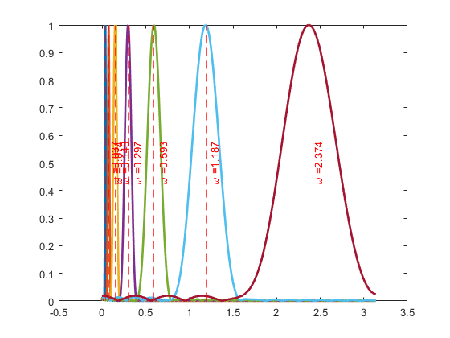
5.3a)
fs = 8000; % Sampling frequency t = 0:1/fs:0.85; % Time vector from 0 to 0.85 seconds with 1/fs step xx = zeros(size(t)); % Initialize signal vector % Define the three time intervals interval1 = (t >= 0) & (t < 0.25); interval2 = (t >= 0.3) & (t < 0.55); interval3 = (t >= 0.6) & (t < 0.85); % Add sinusoids in each time interval xx(interval1) = cos(2*pi*220*t(interval1)); xx(interval2) = cos(2*pi*880*t(interval2)); xx(interval3) = cos(2*pi*440*t(interval3)) + cos(2*pi*1760*t(interval3)); % Plot the signal figure(10); plot(t, xx); title('Generated Signal x(t)'); xlabel('Time (s)'); ylabel('Amplitude'); grid on;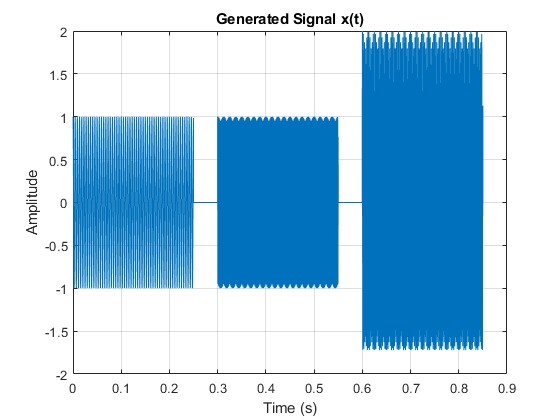
5.3b)
Frequency bands for 5 BPF
bands = [BP_Filters(2, "StartingFreq_Hz_"), BP_Filters(2, "EndingFreq_Hz_"); BP_Filters(3, "StartingFreq_Hz_"), BP_Filters(3, "EndingFreq_Hz_"); BP_Filters(4, "StartingFreq_Hz_"), BP_Filters(4, "EndingFreq_Hz_"); BP_Filters(5, "StartingFreq_Hz_"), BP_Filters(5, "EndingFreq_Hz_"); BP_Filters(6, "StartingFreq_Hz_"), BP_Filters(6, "EndingFreq_Hz_");]; L = 101; % Filter length N = 1024; % FFT size for frequency response numBands = size(bands, 1); filterOutputs = zeros(numBands, length(xx)); % To store filter outputs for i = 1:numBands % Calculate center frequency and normalized cutoff fc = (bands{i, "StartingFreq_Hz_"} + bands{i, "EndingFreq_Hz_"}) / 2; wc = 2 * pi * fc / fs; % Convert to normalized frequency % Call HammingNorm to generate frequency response H = HammingNorm(wc, L, N); % Obtain frequency response % Apply the filter (IFFT to create time-domain filter coefficients) h = ifft(ifftshift(H), 'symmetric'); h = h(1:L); % Trim to filter length % Filter the signal filterOutputs(i, :) = filter(h, 1, xx); end
5.3c)
Plot Frequency Responses for All Filters
figure(11); for i = 1:numBands subplot(numBands, 1, i); plot(t, filterOutputs(i, :)); title(['Filter Output for Band ', num2str(round(bands{i, "StartingFreq_Hz_"})), ... '-', num2str(round(bands{i, "EndingFreq_Hz_"})), ' Hz']); xlabel('Time (s)'); ylabel('Amplitude'); grid on; end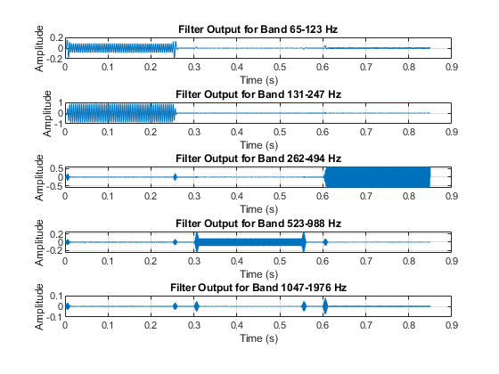
5.3d) Validate Output Signals by Comparing Magnitudes and Phases
Frequency responses for validation
filterOutputMaxFreq = zeros(3, numBands);
regionIndex = [1, 0.25*fs; 0.3*fs, 0.55*fs; 0.6*fs, 0.85*fs];
regions = {xx(1:0.25*fs), xx(0.3*fs:0.55*fs), xx(0.6*fs:0.85*fs)}; % Cell array to store regions
regionOctave = zeros(3, 1); % To store octave results for each region
%For the input signal xx, based on the given definition:
%xx1 is a sinusoid at 220 Hz → Expected Octave = 3.
%xx2 is a sinusoid at 880 Hz → Expected Octave = 5.
%xx3 contains 440 Hz and 1760 Hz → Expected Octaves = 4.
% Validation of Regions
expectedOctaves = [3, 5, 4]; % Expected octaves for xx1, xx2, xx3
% Define frequency axis limits
f = (0:N-1) * (fs / N);
maxFreqIndex = find(f <= BP_Filters{6, "EndingFreq_Hz_"});
maxFreqIndex = maxFreqIndex(end);
minFreqIndex = find(f >= BP_Filters{1, "StartingFreq_Hz_"});
minFreqIndex = minFreqIndex(1);
for regionIdx = 1:3
currentRegion = regions{regionIdx}; % Select the current region (xx1, xx2, xx3)
% Initialize storage for filter outputs in the current region
filterOutputs = zeros(numBands, length(currentRegion));
maxMagnitudes = zeros(1, numBands); % To store the max magnitude for each filter band
% Filter each region
for i = 1:numBands
% Calculate center frequency and normalized cutoff
fc = (bands{i, "StartingFreq_Hz_"} + bands{i, "EndingFreq_Hz_"}) / 2;
wc = 2 * pi * fc / fs; % Convert to normalized frequency
% Call HammingNorm to generate frequency response
H = HammingNorm(wc, L, N); % Obtain frequency response
% Apply the filter (IFFT to create time-domain filter coefficients)
h = ifft(ifftshift(H), 'symmetric');
h = h(1:L); % Trim to filter length
% Filter the current region signal
filterOutputs(i, :) = filter(h, 1, currentRegion);
end
% Compute and store the max frequencies for validation
figure(regionIdx + 11); % Start figure numbering from 12
sgtitle(['Region ', num2str(regionIdx)]);
for i = 1:numBands
% Fourier Transform of the filter output
Y = fft(filterOutputs(i, :), N);
Y = Y(minFreqIndex:maxFreqIndex);
f_band = f(minFreqIndex:maxFreqIndex);
% Magnitude and phase plots
subplot(numBands, 2, 2*i-1);
plot(f_band, abs(Y));
title(['Normalized Output for Band ', num2str(round(bands{i, "StartingFreq_Hz_"})), ...
'-', num2str(round(bands{i, "EndingFreq_Hz_"})), ' Hz']);
xlabel('Frequency (Hz)');
xlim([f_band(1) f_band(end)]);
ylabel('Magnitude');
grid on;
subplot(numBands, 2, 2*i);
plot(f_band, angle(Y) / pi);
title(['Phase of Output for Band ', num2str(round(bands{i, "StartingFreq_Hz_"})), ...
'-', num2str(round(bands{i, "EndingFreq_Hz_"})), ' Hz']);
xlabel('Frequency (Hz)');
xlim([f_band(1) f_band(end)]);
ylim([-1 1]);
ylabel('Phase (\pi rad)');
grid on;
% Find the max magnitude for the current band
maxMagnitudes(i) = max(abs(Y));
end
% Determine the octave for the region based on the band with the highest peak
[~, maxBandIdx] = max(maxMagnitudes); % Index of the band with the highest peak
regionOctave(regionIdx) = maxBandIdx + 1; % Octave is band index + 1
% Display the result
disp(['Region ', num2str(regionIdx), ' belongs to Octave ', num2str(regionOctave(regionIdx))]);
end
validationPassed = true; % Flag to track validation status
for regionIdx = 1:3
fprintf('Validating Region %d...\n', regionIdx);
fprintf('Computed Octave: %d | Expected Octave: %d\n', regionOctave(regionIdx), expectedOctaves(regionIdx));
if regionOctave(regionIdx) == expectedOctaves(regionIdx)
fprintf('Region %d: Validation Passed.\n', regionIdx);
else
fprintf('Region %d: Validation Failed!\n', regionIdx);
validationPassed = false;
end
end
if validationPassed
disp('All regions passed validation!');
else
disp('Some regions failed validation. Check the filtering and analysis.');
end
Region 1 belongs to Octave 3 Region 2 belongs to Octave 5 Region 3 belongs to Octave 4 Validating Region 1... Computed Octave: 3 | Expected Octave: 3 Region 1: Validation Passed. Validating Region 2... Computed Octave: 5 | Expected Octave: 5 Region 2: Validation Passed. Validating Region 3... Computed Octave: 4 | Expected Octave: 4 Region 3: Validation Passed. All regions passed validation!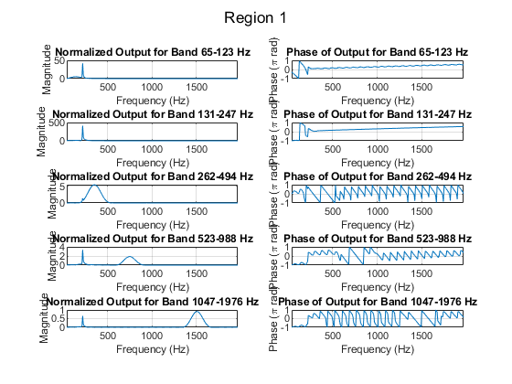 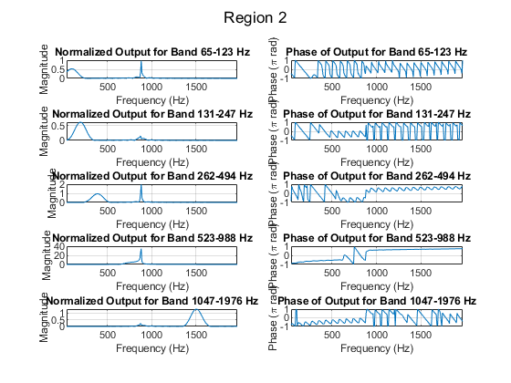 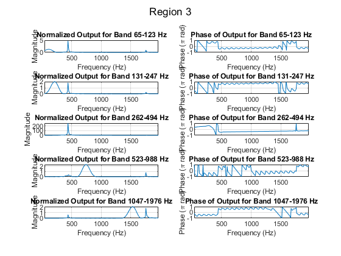
5.3e)
Define filter length and sampling frequency
L = length(h); % Filter length transientDuration = L / fs * 1000; % Transient duration in milliseconds fprintf('Transient Duration: %.4f seconds\n', transientDuration); % Analyze transient effects for each filter in each region for regionIdx = 1:3 currentRegion = regions{regionIdx}; % Select the current region filterOutputs = zeros(numBands, length(currentRegion)); % Apply each filter to the current region for i = 1:numBands % Calculate center frequency and normalized cutoff fc = (bands{i, "StartingFreq_Hz_"} + bands{i, "EndingFreq_Hz_"}) / 2; wc = 2 * pi * fc / fs; % Convert to normalized frequency % Call HammingNorm to generate frequency response H = HammingNorm(wc, L, N); % Obtain frequency response h = ifft(ifftshift(H), 'symmetric'); % Filter coefficients h = h(1:L); % Trim to filter length % Filter the signal filterOutputs(i, :) = filter(h, 1, currentRegion); % Plot transient effects figure(regionIdx + 14); % Separate figure for each region subplot(numBands, 1, i); plot(((0:length(currentRegion)-1) / fs * 1000), filterOutputs(i, :)); hold on; xline(transientDuration, 'r--', 'LineWidth', 1.5); % Mark transient duration title(['Filter Output for Band ', num2str(round(bands{i, "StartingFreq_Hz_"})), ... '-', num2str(round(bands{i, "EndingFreq_Hz_"})), ' Hz']); xlabel('Time (ms)'); xlim([0 25]) ylabel('Amplitude'); sgtitle(['First 25ms of Region ', num2str(regionIdx)]); grid on; hold off; end end % The transient duration lasts roughly 12.6 ms which can be seen in the % plots indicated by the red vertical line. The duration is the same for % each filter in the bank.
Transient Duration: 12.6250 seconds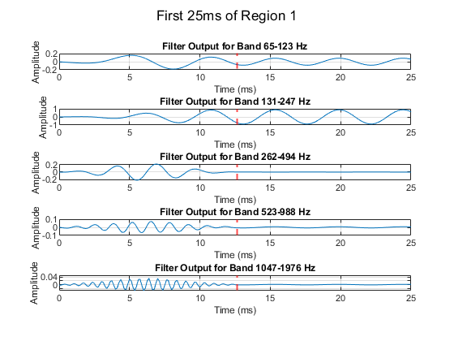 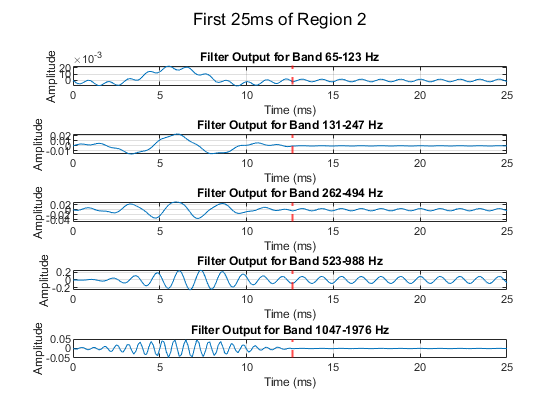 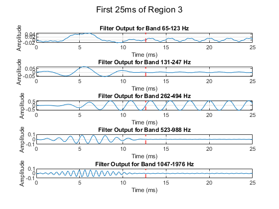
Project Functions
Simple Band Pass Filter (4.1a)
% Function for bandpass filter frequency response function H = BPFsimp(wc, L, N) h = zeros(1, L); % Initialize impulse response % For loop defining impulse Response for BPF for n = 0:L-1 h(n+1) = (2 / L) * cos(wc * n); end % Frequency response for the bandpass filter H = fftshift(fft(h,N)); % Take N-point DFT of Bandpass filter and shift 0 frequency to center end
Width of pass band (4.1b)
% Function that finds passband width using the magnitude response, omega, % and the threshold level for the passband. function Passband = PBWidth(H,w,th) % Find frequencies where |H(w)| is above threshold Hmag = abs(H); % Defintion of magnitude response H1 = find(Hmag >= th, 1, 'first'); % Find first index where |H(w)| is close to threshold H2 = find(Hmag >= th, 1, 'last'); % Find last index where |H(w)| is close to threshold % Convert indices to frequency values w1 = w(H1); % Frequency at start of passband w2 = w(H2); % Frequency at end of passband Passband = w2 - w1; % Width of the passband end
Passband width @ the 50% level is approximately 0.2761 radians for the L = 41 filter
Better Bandpass filter
% Function for bandpass filter frequency response function H = BPFbetter(wc, L, N) h = zeros(1, L); % Initialize impulse response % For loop defining impulse Response for BPF with Hamming window for n = 0:L-1 h(n+1) = (0.54 - 0.46 * cos(2 * pi * n / (L - 1))) * cos(wc * (n - (L - 1) / 2)); end % Frequency response for the bandpass filter H = fftshift(fft(h,N)); % Take N-point DFT of Bandpass filter and shift 0 frequency to center end
Normalized Hanning Bandpass Filter (5.2)
% Same as function "BPFbetter" but with a scaling term "B" so that the % maximum value at the center frequency is equal to one. function H = HammingNorm(wc, L, N) h = zeros(1, L); % Initialize impulse response % For loop defining impulse Response for BPF with Hamming window for n = 0:L-1 h(n+1) = (0.54 - 0.46 * cos(2 * pi * n / (L - 1))) * cos(wc * (n - (L - 1) / 2)); end % Frequency response for the bandpass filter H1 = fftshift(fft(h,N)); % Take N-point DFT of Bandpass filter and shift 0 frequency to center B = 1/max(abs(H1));% Scaling factor so that max(abs(H)) = 1. H = B*H1; end